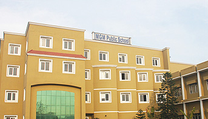
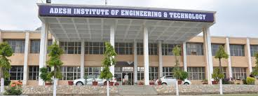

MGM Public School, Faridkot
I have completed my secondary level study in MGM Sen.Sec.School, faridkot,Punjab,India. Mgm School Fdk-21 (MSF) located at Faridkot Faridkot Harindera Pry. Faridkot Faridkot Ward-21 is one of the popular schools in India. The School has been rated by 7 people on iCBSE. The Mgm School Fdk-21 has been viewed 39 times by the visitors on iCBSE. This School is counted among the top-rated Schools in Punjab with an excellent academic track record.
Aadesh College
Aadesh Institute of Engineering and Technology is a college where I have completed my graduation. Adesh Institute of Engineering and Technology (AIET Faridkot) provides science and technology-based engineering education with a view to producing quality engineering graduates. The institution was established in 1996 on 39 acres of land, located at Sadiq Road, Faridkot.
Lambton college
I am currently enrolled in Lambton college,toronto for my post graduation(MADT).
Lambton opened a Lambton in Toronto for international
students who were looking for an opportunity to study
in Toronto. Lambton in Toronto was opened in partnership
with Cestar College who is licensed to administer the curriculum.